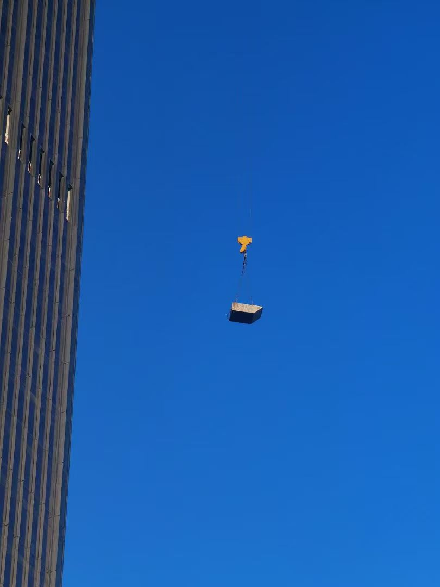
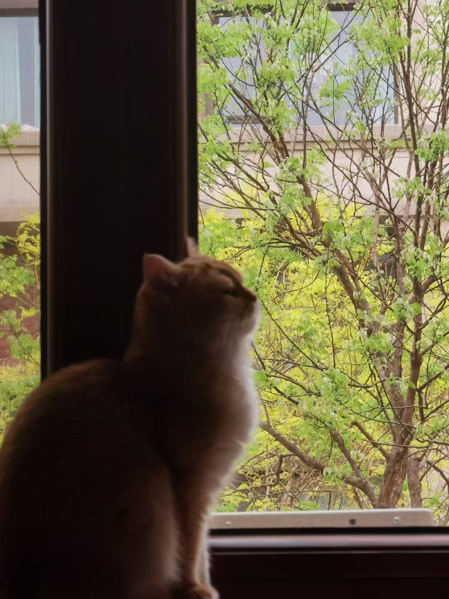
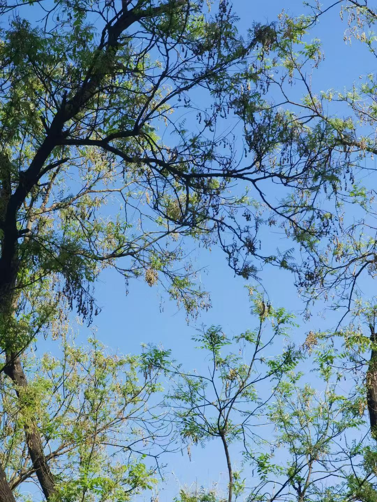

Creative Pieces:

Flights (2024)
Ma vie chinoise est dans la traduction - You learn a language by forgetting another. An experience goes through your mind once, in the form of electricity, then immediately it degrades into a thought - my philosophy professor said: no intention before language. Memory is that kind of experience.
My world looms larger and my language shrinks. I use what I have. A conqueror is what you become in your early twentieth: you are insatiable and you want both. It's good that you are in the works, my modern dance instructor said. When you try to dance at the edge of what you can, what happens? You must not flinch at the acidity of imprecision. You produce prolific language junk. You speak upon the edge of what you can.

Sample Essays:

Confrontation, Friction, or Assimilation: Bashō's Self and Other (2024)
What does it mean to wander? In Matsuo Bashō 's The Narrow Road to the Deep North, the self doesn't travel through the world so much as slowly dissolve into it.
The haiku's humble scope promises loyalty to a single moment of a single object, and he never objectifies a scenery or situation as vehicles on which to enforce his subjectivities. As he identifies with the smallest unit of time and space in the vast world, embracing his mortality, he identifies with fish, blossoms, and leaves that are currently fresh and green but will disappear with the summer. He hears birds, wind, and splashings of waterfalls that sound differently in each moment, as if hearing himself, with effortless omniscience.